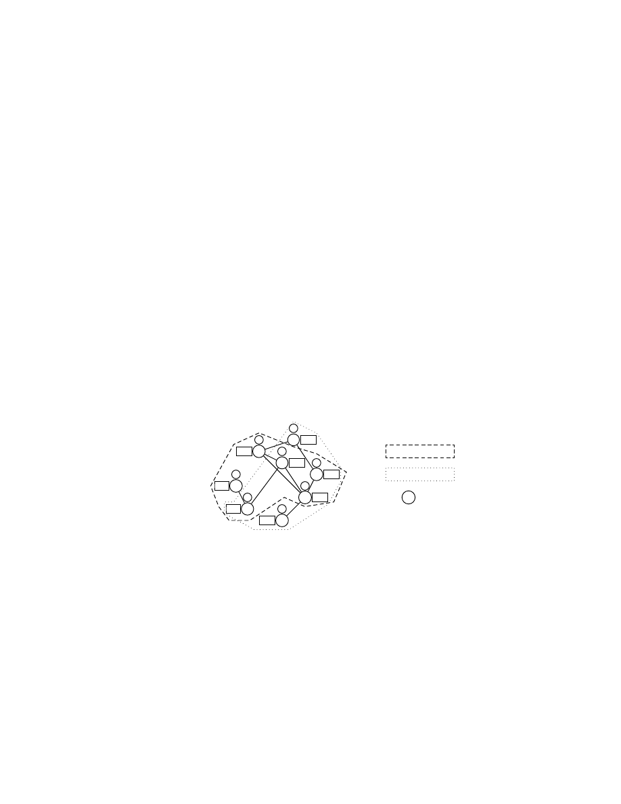
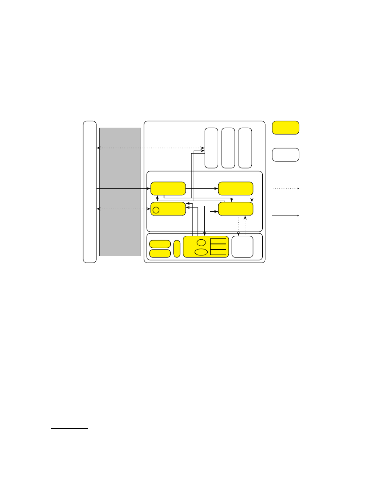
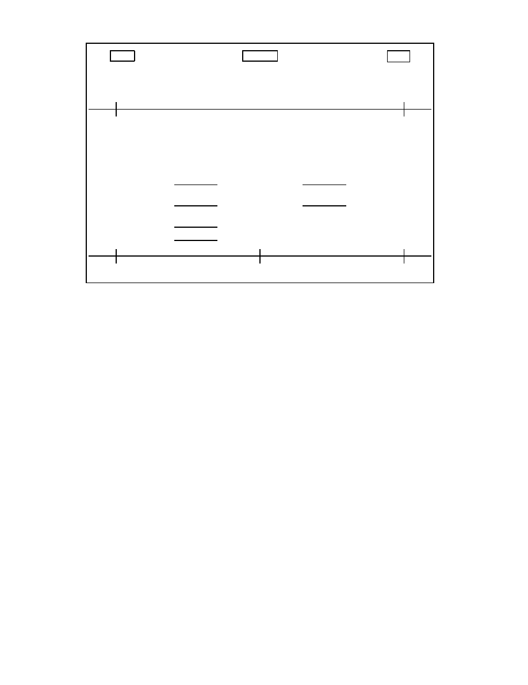

Enhancing Grid Security Using Trusted Virtualization
Hans L¨ohr
‡
HariGovind V. Ramasamy
†
Ahmad-Reza Sadeghi
‡
Stefan Schulz
‡
Matthias Schunter
†
Christian St¨uble
‡
†
IBM Zurich Research Laboratory
‡
Horst-G¨ortz-Institute for IT-Security
R¨uschlikon, Switzerland
Ruhr-University Bochum, Germany
{hvr,mts}@zurich.ibm.com
{loehr,sadeghi,schulz,stueble}@crypto.rub.de
Abstract. Grid applications have increasingly sophisticated functional and security requirements. How-
ever, current techniques mostly protect only the resource provider from attacks by the user, while leaving
the user comparatively dependent on the well-behavior of the resource provider.
In this paper, we take the first steps towards addressing the trust asymmetry by using a combination of
trusted computing and virtualization technologies. We present the key components for a trustworthy grid
architecture and propose an implementation. By providing multilateral security, i.e., security for both the
grid user and the grid provider, our architecture increases the confidence that can be placed on the correctness
of a grid computation and on the protection of user-provided assets. To maintain important scalability and
performance aspects, our proposal aims to minimize overhead. To this end, we also propose a scalable offline
attestation protocol, which allows selection of partners in the grid with minimal overhead.
Keywords: Trusted Computing, Grid, Scalability, Attestation
1
Introduction
1.1
Background
Grid computing has been very successful in enabling massive computing efforts to take place, but
has hitherto been dominated by ‘big science.’ These projects are usually in the scientific or academic
domain (such as SETI@HOME or distributed.net) and, although important, they usually have less
stringent security requirements than commercial IT systems.
Currently, security is built into grid toolkits (e.g. the Globus toolkit [11]) used at the provider sites
(parties that offer resources for use in the grid). Secure channels, authentication [4], unsupervised
login, delegation, and resource usage [12] are all handled by the toolkit. These mechanisms usually do
not concern themselves with protecting the grid user (the person or entity wishing to utilize resources).
The user is forced to trust the provider, often without possibility to verify whether that trust is justified.
However, the user is not usually regarded as trustworthy in most of the current literature on grid
security (e.g., [17, 40]). This trust asymmetry could potentially lead to a situation in which the grid
provider causes large damage to the user with little risk of detection or penalty. An attacker might
publish confidential data or sabotage the entire computation by providing false results. These problems
are most evident in computational grids, especially in mobile code [14] scenarios. Other grids, such
as storage or sensor grids, may also suffer from the negative consequences of this trust asymmetry,
perhaps to a lesser extent. Because of this problem, companies are hesitant to utilize available grid
resources for critical tasks.
Given this state of affairs, in [21] the authors propose to utilize the emerging Trusted Computing
(TC) technology for the grid, with [37] more closely examining which scenarios require TC tech-
niques. Trusted Computing can be used to enforce multilateral security in this context, which means
fulfilling the security objectives of all involved parties. The importance of enforcing multilateral se-
curity requirements in the grid has also been stressed by other works, such as [23].
In this paper, we consider “trust” to be the opposite of enforcement. Thus, a trusted component is
a component whose well-behavior cannot be enforced by another component and, therefore, has the
ability to violate a security policy. This inherently negative view of trust contrasts with the notion put
forward in other grid-related works, such as [3, 38, 39], which view trust as a positive, reputation-based
property. A large percentage of the platforms used in large-scale grids are built using general-purpose
hardware and software. However, existing platforms often incorporate a a Trusted Platform Module
(TPM), based on specifications of the Trusted Computing Group (TCG). This module provides a
trusted component, usually in the form of a dedicated hardware chip.
The TPM chip is tamper-evident (and ideally, tamper-resistant) hardware that provides crypto-
graphic primitives, measurement facilities, and a globally unique identity (see also [19]). For verifi-
cation purposes, a remote party can query the TPM’s measurement of the Trusted Computing Base
(TCB) by means of attestation. This mechanism, proposed by the TCG, enables (remote) verification
of the status of a platform’s TCB.
One approach to securing computing systems that process potentially malicious code (such as in
many number-crunching grid applications) is to provide a virtualized environment. This technique is
widely used for providing “V-Servers,” i.e., servers that feature several virtual machines. Each of these
virtual machines may be rented to one or several users. While users have full control over the virtual
environment, they cannot cause damage outside that environment, except possibly through attempts
at resource monopolization, for example, by “fork bombing.” Although virtualization offers abstrac-
tion from physical hardware and some control over process interaction, there still are problems to be
solved. For example, in the x86 architecture, direct memory access (DMA) devices can access arbi-
trary physical memory locations. However, hardware innovations such as Intel’s Trusted Execution
Technology
1
and AMD’s Virtualization Technology
2
aim to address these problems and could even-
tually lead to secure isolation among virtual machines. Virtualization technology can be leveraged for
building a trustworthy grid environment, especially because several works, such as [33], have already
begun to consider architectures that feature policy enforcement in the virtualization framework.
A trustworthy grid environment that enforces multilateral security would offer a number of ben-
efits. Even sensitive computations could be performed on untrusted hosts. Community computation
could become an attractive mode of conducting computationally-intensive tasks. Most personal com-
puters used today possess computing abilities in excess of what is required for casual or office use.
These resources could be leveraged to run grid jobs in parallel to the users’ normal workflow and
provide the computational power necessary for next-generation modeling and simulation jobs, with-
out costly investments into new infrastructure. Enterprises could utilize the already-present office
machines more fully, resulting in earlier return on their investment.
1.2
Our Contribution
Currently, the trust asymmetry explained earlier hinders adoption of grid computing for commercial
scenarios. Current solutions have so far failed to solve this problem convincingly. Enforcement of user-
provided policies has always relied on the goodwill of the provider. This shortcoming was alleviated
through reputation systems or deterrents by liability law, but such solutions cannot cope with highly
dynamic and largely pseudonymous scenarios.
We propose a realistic security architecture that uses Trusted Computing functionality and actually
enforces multilateral security in a grid scenario. Using isolation between virtual machines combined
with a trusted base system (“Trusted Virtualization”), our design is able to protect confidentiality
and integrity in a multilateral fashion, thus allowing outsourcing computations to untrusted or even
anonymous parties without compromising security. We feel our compartmented security design offers
a stronger level of protection than many current techniques can provide.
1
formerly known as LaGrande; see
http://www.intel.com/technology/security
2
formerly code-named Pacifica; see
http://www.amd.com/virtualization
2

Based on this architecture, we propose a job submission protocol that is based on offline attes-
tation. This protocol allows one to verify that a previously selected partner is in a trusted state, with
little overhead and improved resistance to attack. Our protocol also guarantees transitive trust rela-
tions if that partner performs further delegations. A version of this work has already been presented at
WATC’06 [20], but not been published in formal proceedings.
2
System Model and Security Requirements
2.1
Notation and Definition
In this work, we use the following notation:
P
and
U
denote the set of providers and users currently
registered in the grid, with
P
∈ P
being a single provider and
U
∈ U
a single user.
K
is an asymmetric
cryptographic key, with private part
s
K
and public part
p
K
.
σ
is the actual state of a machine at any given
time, a summary of all trusted code that either has been or is currently being executed on the machine.
σ
′
is its reported state (these two may differ). Both
σ
and
σ
′
can be encoded as a configuration (or
metrics)
conf
, a short representation of the state (e.g., a hash value) as determined by the measurement
facility of the machine, e.g., the TPM.
J
is a grid job. The format of
J
is described in more detail
in Section 2.3.
SP
X
denotes the policy of some entity
X
.
C
is a set of credentials of some kind,
without specifying the specific type. A specific aspect of a policy is the
good
set, which contains the
conf
values of all states
σ
considered to be trustworthy by that policy. For a finite number of trusted
configurations, this can be expressed as an enumeration, but more complex scenarios likely require
a more complex encoding.
enc
p
K
(
X
)
denotes a piece of data
X
encrypted with a public key
p
K
.
sign
s
K
(
X
)
denotes an item of data
X
that has been digitally signed by a private key
s
K
.
2.2
Usage Scenario
First, we give an usage example of our grid architecture with offline attestation (shown in Figure 1):
A
B
C
D
E
F
G
H
SP
A
SP
B
SP
C
SP
D
SP
E
SP
F
SP
G
SP
H
τ
A
τ
B
τ
C
τ
D
τ
E
τ
F
τ
G
τ
H
Set of Providers
P
Set of Users
U
Grid Node
Fig. 1. An example grid
A node (such as F), upon joining the grid, generates and publishes an attestation token (
τ
F
), which
can be used by potential partners to obtain assurance about the node’s trustworthiness. Grid users (such
as C) retrieve attestation tokens from different grid nodes and select a token indicating a configuration
they are willing to trust. The selection decision is made offline, and incurs negligible overhead on the
part of the user. Once an acceptable provider has been found, users can submit jobs that can only be
read by the selected node in the configuration they consider as trustworthy. If the node has changed to
another configuration, communication will fail.
The main advantage of this approach is that the creation of the attestation tokens is decoupled from
the process of job submission, while still providing freshness. In addition, these tokens are transferable
and their correct creation can be verified without interacting with their creators.
3
2.3
Our System Model
We consider an abstract version of the grid that features only
P
and
U
.
3
Each
U
∈ U
can attempt
to access any
P
∈ P
. Each participant in the grid is considered to be a partner-and-adversary, that
potentially intends to harm other participants, but also provides services. Such a partner-and-adversary
can only be depended upon to execute a given task correctly if it can prove its inability to cause damage
(break a partner’s security policy). We consider delegation to be modeled as one participant being part
of both
P
and
U
(see Figure 1). A machine
m
is a single physical host. It can host one or more logical
participants of either role, and offers a number of interfaces, both externally and between its internal
components. Every participant has its own, distinct policy. Each component of
m
is an independent
actor offering some interface(s) to other components, and usually utilizing interfaces offered by other
components.
P
and
U
need not be static, but can grow and shrink dynamically as new resources are
being added to the grid virtual organization (VO), and some participants leave the VO. However, such
adjustments (joining and leaving) are not the focus of this paper.
For our purposes, a job image is a tuple
J
= (
data
,
C
,
SP
U
)
, where
data
may be an invocation
to some predefined interface or carry executable code. While certainly possessing a quality different
from input data, for security purposes, a piece of executable code demands the same requirements
and can be protected using the same techniques as for any other piece of data. Therefore, we do not
distinguish between “code”, and “data”, but instead consider executable content to be a special kind of
data.
C
represents the credentials of
U
, which may be needed to gain access to
P
. The user also passes
a policy
SP
U
as part of its invocation, which specifies constraints to be upheld for that particular job.
The job, once scheduled, can communicate directly with
U
(subject to the
SP
P
).
A machine
m
always has exactly one state
σ
describing the status of the trusted computing base
(TCB), rather than a particular VM. This state comprises all code running as part of the TCB. TCB
components are critical to the correct functioning of the system and need to be trusted. Adding, re-
moving, or modifying such a component changes
σ
, but
σ
will not change because of “user actions,”
such as installing application software, browsing the web, or executing a grid job. Furthermore, the
system will not allow any party (not even system administrators) to alter the TCB without changing
the state
σ
.
2.4
Requirements
Although most policies describe high-level requirements on the use and dissemination of data, such
requirements can be reduced to simpler building blocks. Essentially, three main types of requirements
exist: confidentiality, integrity, and availability. These requirements can be applied to data and can be
combined, and form the basis of all more complex policies. In the context of the grid, interoperability
is often an important functional requirement, between both machines and different grid environments.
We will briefly discuss interoperability in Section 6. Availability has been considered in other works,
and runs orthogonal to our work. We will focus on providing multilateral protection of confidentiality
and integrity in this paper.
Integrity. Integrity requirements mean protecting some item of data from unauthorized modification.
These requirements usually are satisfied only by detecting violations of integrity, instead of actively
preventing them. User
U
might be motivated to alter aspects of Provider
P
, for example, to elevate its
privilege level. Similarly,
P
might wish to modify job
J
, either to manipulate the computation or to
modify the program behavior and outcome. Either side needs to be protected from attacks of the other.
3
More complex models are imaginable, including platform owner, middleware owner, and application owner having own
requirements.
4

Confidentiality. Confidentiality requirements represent the need to prevent some parties from access-
ing an item of data. Protected data could, in principle, be freely modified and even destroyed, as long
as the attacker is not able to deduce the meaning of that data.
P
needs to protect its secret information
from
U
. A malicious job could collect secrets, such as signature keys, and forward them to
U
if confi-
dentiality was not enforced. However,
U
might utilize confidential data as part of
J
, and demand that
this data not be disclosed to any party other than
J
’s execution environment.
3
A Trusted Grid Architecture
U
se
r
Network
Provider
Trusted Software Layer
Hardware
attest
()
submit
()
Application Data and Results
L
eg
ac
y
O
S
G
ri
d
Jo
b
G
ri
d
Jo
b
HD
TPM
CPU
RAM
C
R
T
M
PCR0
PCR1
...
s
AIK
s
K
Storage Service
w
rit
e
()
re
a
d
()
se
a
l
()
u
n
se
a
l
()
load
()
store
()
Attestation
Service
τ
c
e
rt
if
y
K
e
y
()
c
re
a
te
K
e
y
()
Grid Service
createVM
()
Compartment
Service
g
e
tI
D
()
Trusted
Untrusted
Potentially Insecure
Channel
Secure Channel
Fig. 2. The Trusted Grid Architecture and its Components
In this section, we present an architecture for enhancing security and trust properties in grid com-
puting. We call our architecture the Trusted Grid Architecture (TGA). Figure 2 shows the abstract
building blocks of the TGA. The hardware platform provides a TPM and untrusted storage. The
Trusted Software Layer (TSL) consists of the attestation, grid management, compartment manage-
ment, and storage management components. The TSL provides both security functionalities and vir-
tualization of the hardware (that is, the ability to run several virtual machines in parallel). The TCB
consists of the TSL and the trusted hardware components. Security policies have to be enforced by
the TCB, but a detailed treatment of policy enforcement would exceed the scope of this paper. Other
works, such as [25, 33] and [6], examine some necessary properties of policy engines.
Trusted Computing (TC) seems to be a promising basis technology towards building trustwor-
thy computing platforms. One approach to develop TC technology has been initiated by the Trusted
Computing Group (TCG)
4
, a consortium of many IT enterprises. The claimed role of the TCG is to
develop, define and promote open, vendor-neutral industry specifications for TC including hardware
building blocks and software interface specifications across multiple platforms and operating environ-
ments. These specifications provide a set of cryptographic and security functions based on which a
larger set of security functionalities can be built, e.g., the attestation mechanisms that allow a platform
4
see
http://www.trustedcomputinggroup.org
5
to verifiably report its state to a (authorized) remote party. The main TCG specifications are a compo-
nent providing cryptographic functions called Trusted Platform Module (TPM), a kind of (protected)
pre-BIOS (Basic I/O System) called the Core Root of Trust for Measurement (CRTM), and the Trusted
Software Stack (TSS) presenting the software interface to provide TC functionality to the operating
system.
The TCB of our TGA needs to be trusted by applications using it and must be resistant to attacks.
If the TCB is vulnerable to attacks and code can be executed with full privilege, this potentially
implies a full system compromise. Such a full compromise need not even be communicated to the
TPM, meaning that the measured state does not change from the trusted values. TPM measurements
therefore only guarantee load-time integrity of a TCB, and do not rule out a later compromise. Only
maintaining load-time integrity places a special focus on preventing TCB compromises. Proper design
of a minimum set of trusted services can help to achieve a TCB with the highest possible resistance to
attacks. Additional guarantees about runtime behavior and state may be provided by some dedicated
service within the TCB or as an extension to our attestation service. However, such techniques would
exceed the scope of our current discussion. Other works, such as [15], strive to provide such guarantees
by monitoring the runtime behavior and state of programs.
Of all the components mentioned, only the TPM and the CRTM are trusted at “face value” – by
virtue of their fabrication adhering to TCG specifications; trust in the remainder of the TCB derives
from the TPM’s root of trust only after measurements confirm integrity. The entire TCB is subject to
this measurement, but no untrusted applications (such as grid jobs or legacy OS images) are measured,
as they cannot violate the security policy (as the appropriate limitations are enforced on them). If the
state
σ
of the TCB ever changes after boot, it is the TCB’s responsibility to stop any grid jobs currently
executing before changing into the new, possibly untrusted, state.
3.1
Hardware
Besides the trusted CPU and RAM, two other pieces of hardware play a central role in our proposal:
The TPM chip and the harddisk. The TPM chip naturally is vital, as without it, no integrated trusted
third party would be present. It functions as a root of trust, which means we trust its manufacturer
to correctly implement the TPM functions. Recent tests [28] show that this is not always the case.
We further assume that the cryptographic primitives used are secure. Each TPM possesses a number
of platform configuration registers (PCRs), at least 16 as of version 1.2 of the specification
5
. The
PCRs are not arbitrarily writable, but instead can only be updated by means of the extend operation,
i.e., by applying a cryptographic hash function to the old content of the PCR and the new value. A
trusted boot process extends measurements (i.e., hash values) of the platform’s TCB, starting from the
CRTM. The CRTM measures the BIOS before executing it, the BIOS measures (and then executes)
the boot loader, the boot loader measures the operating system, and so on. The values of the PCRs
thus represent all trusted software executed on the platform, describing a configuration
conf
of the
platform. While the TPM supports a large number of operations, we will use four in the course of this
article: secure key generation, measurement, certification, and sealing.
The TPM features a hardware random number generator and implements generation of RSA key
pairs
K
= (
p
K
, s
K
)
. For these key pairs, usage limitations can be defined. One possible limitation is
sealing, which marks the private key as not being migratable and usable only when a specified subset
of the PCRs contain the same values as were present during the generation of the key. It is possible to
obtain a certificate stating which usage conditions apply to a key pair (as represented by its public key
p
K
) from the TPM, signed by one of its Attestation Identity Keys (AIKs). AIKs are special signature
5
see
https://www.trustedcomputinggroup.org/specs/TPM
6

keys created by the TPM. The private key of an AIK cannot be extracted from the TPM, i.e., it is non-
migratable, and it cannot be used to certify migratable keys. AIKs can be certified by a Certification
Authority (CA), or they can be proved to be valid AIKs anonymously by means of Direct Anonymous
Attestation (DAA) [7]. Such a certificate or proof is denoted as
cert
CA
(
AIK
)
.
In addition to measuring components (by extending PCRs), the TPM can report these measure-
ments to other parties by signing the values of the PCRs with an AIK. As the AIK can only be used
in a small set of TPM operations, none of which allows the signing of arbitrary data, a valid AIK
signature guarantees that the TPM generated the signed structure. For our purposes, we use signed
KeyInfo
structures that are considered as certificates, although they do not conform to common cer-
tificate standards, such as X.509. A
KeyInfo
structure of a sealed key includes the selection of PCRs
that were used for sealing as well as their values at the time of key generation and the values of the
selected PCRs needed to use the sealed key. Also, the
KeyInfo
structure indicates whether a key is
migratable. We use an AIK to sign such a structure with the
CertifyKey
operation of the TPM and
denote the resulting certificate by
cert
AIK
(
p
K
)
.
These restricted keys enable sealing. Data sealed to a certain configuration of the system is en-
crypted with a public key whose corresponding private key is accessible only to a certain state and
platform. If the data is successfully decrypted, this indicates that the state the key was sealed to is the
actual state of that machine.
Unlike the TPM, the harddisk is not trusted. The harddisk merely provides bulk data storage, and
no special properties are attached to it. Data may be modified on the harddisk, and anyone can freely
read the disk’s contents. The Storage Service applies the necessary operations to provide us with
persistent trusted storage.
3.2
Attestation Service (AS)
The attestation service deals with providing metrics about the current configuration to remote parties.
We propose a way to prove a trusted state
σ
that does not directly involve invocation of the TPM.
This has the advantage of not requiring the mere lookup of a configuration to already make use of
the TPM. Instead, each participant in the grid creates an attestation token
τ
. Such a token is a tuple
τ
:= (
p
AIK
, p
K
,
cert
CA
(
AIK
)
,
cert
AIK
(
p
K
))
.
This tuple consists of the following elements:
cert
AIK
(
p
K
)
is a certificate (a
KeyInfo
structure,
to be exact) of the key including the metrics
conf
of the reported state
σ
′
and usage restrictions of
the key as detailed in Section 3.1.
cert
CA
(
AIK
)
is the certificate of the AIK used. From
conf
,
U
is able to distinguish a trusted
σ
′
from an untrusted one because the values uniquely identify a set
of programs that have been loaded since booting the platform, and possibly also the state of certain
critical configuration files. The simplest way of distinguishing trusted from untrusted values would be
to keep a list of known good values, and not consider any other values as trusted.
cert
AIK
(
p
K
)
assures
us that
s
K
can be used only in the reported state
σ
′
, as the certificate identifies the key
K
as being sealed
to
conf
.
U
can make its trust decision “offline” by examining the
conf
contained in the
τ
. If this
conf
indicate a trusted
σ
′
,
s
K
will be accessible only if
P
still is in the same configuration. As the token does
not change over time, it can be distributed to other parties. If the state
σ
of
P
ever changed,
τ
would
automatically become invalid, although an explicit revocation might still be beneficial. Further details
of this attestation mechanism and its security will be discussed in Section 4.
3.3
Compartment Management Service (CMS)
This component creates virtual machines (also called compartments), which run on top of the TCB.
These VMs each comprise a portion of memory, and could (potentially) comprise a full-fledged op-
erating system. Each of them is a full VM, thereby enforcing the isolation properties necessary to
7

prevent other compartments from accessing the internal information of a grid job. That is, processes
running in one compartment cannot access memory mapped to another. Thus, they are not able to
interact with one another, except for well-defined interfaces. This isolation property guarantees both
integrity and confidentiality. By setting up compartments in accordance to this isolation policy, this
service actually provides the trusted virtualization we require. An approach to implementing these
properties is provided in Section 6.
Furthermore, this service keeps track of the identity of compartments, assigning a unique identifier
(UID) to each compartment. The CMS is local to one machine, and does not attempt to track virtual
machines across the grid. Any communication between
P
and other participants needs to take place
solely via interactions of the job itself. Being agnostic to the grid and the particulars of its partition,
the CMS is purely concerned with local secure execution.
3.4
Storage Service (SS)
The storage component provides trustworthy non-volatile storage based on an untrusted harddisk.
Trusted Storage means that data stored by one compartment in one configuration is retrievable only
by that compartment in the same configuration, even if the machine has entered an untrusted state in
the meantime. No other compartment or configuration is able to retrieve the information or alter it
undetectedly.
Confidentiality often also implies not revealing the existence of certain data to unauthorized parties
and not merely protecting its contents from access. For example, the mere existence of a plan to
develop a product may be considered a business secret. Therefore, each compartment is outfitted
with a separate namespace that no other compartment may access (in addition to potentially shared
storage). Any compartment is only allowed to access its own and a potential shared namespace, thus
preventing any other VMs from reading its confidential data.
While such separate namespaces protect data in the trusted state, a platform
m
may enter an un-
trusted configuration, in which it can freely access all data. To prevent such an untrusted state from
accessing or altering data, we utilize TPM sealing. By sealing a signature key and using it to sign all
stored data and the position on disk it was stored to, we can protect integrity (by preventing any but the
trusted state from modifying data undetectedly). Alternatively, a symmetric key could be encrypted
by a sealed key, and used to encrypt and compute a message authentication code (MAC) [5]. This
would provide similar guarantees, with a performance very similar to current whole-disk encryption
applications. The same facilities (encapsulated in
load
()
and
store
()
) are made available to both TCB
components and VMs.
3.5
Grid Management Service (GMS)
This component handles the actual grid job submission. It is responsible for receiving jobs, checking
their access, and instantiating them. It will use the CMS to create a private compartment for each job.
If the job needs any special processing before becoming ready to be executed, this processing is done
by this component as well. Once such processing done, a VM image has been created from
J
, which
can then be booted by the CMS. The GMS furthermore takes the policy of the user and notifies an
enforcement component (not shown) of the restrictions and rights declared therein.
Its
submit
()
interface also handles the freshness verification of the
τ
available from the attestation
component. For details regarding the protocol to receive jobs, see Section 4.
4
Scalable Offline Attestation
Attestation, in general, is the process of securely reporting the configuration (state) of a party to a
remote challenger by cryptographic means. The most commonly discussed attestation variant requires
8

User
U
Job
J
, Accept set
good
U
Provider
P
good
P
Common Input: public
key
p
K
, attestation token
τ
TPM
P
`
s
K
, σ
′
s
K
´
, Current state
σ
?
?
Extract
p
K
,
cert
CA
(
AIK
)
,
cert
AIK
(
p
K
)
and
conf
Verify
cert
CA
(
AIK
)
and
Verify that
conf
∈
good
U
Randomly choose nonces
N
,
N
′
and session key
κ
from
τ
cert
AIK
(
K
)
Create
enc
p
K
(
κ
)
,
enc
κ
(
N
)
-
enc
p
K
(
κ
)
,
enc
κ
(
N
)
-
enc
p
K
(
κ
)
Decrypt session key
κ
if
σ
=
σ
′
s
K
Verify
N
Check
good
P
⊆
good
U
enc
κ
(
N
, good
P
)
Decrypt nonce
N
, create
enc
κ
(
N
, good
P
)
κ
Create
enc
κ
(
N
′
,
J
)
-
enc
κ
(
N
′
,
J
)
Decrypt nonce
N
′
,
J
Verify
N
′
N
′
?
?
?
TRUE
job
J
Fig. 3. Submission Protocol
submit
()
a remote challenger to provide a random
N
, which is then signed (together with a hash over a subset
of the current PCR values) by the TPM using an
AIK
. As freshness is achieved by means of a random
nonce, each interaction necessitates a new attestation (and thus, a new TPM-generated digital sig-
nature). However, generating signatures by TPM may significantly impact interaction speeds. Also,
TPM commands can generally not be processed in parallel, introducing an undesirable bottleneck.
In addition, Without appropriate countermeasures, this technology could potentially be vulnerable to
a race between a successful attestation and a change of state before further interactions depending
on the trusted state. If the state of the system changes after attestation has concluded, yet before any
further interactions take place, this change would not be noticed by the remote party. Also, without
connecting attestation to a PKI identity, an attestation challenge could in principle be replayed by an
attacker to a trusted platform, with the attacker forwarding the platform’s reply to its own verifier.
Scalable offline attestation, as mentioned, is intended to enhance some aspects of current attesta-
tion systems. Having an attestation token that can be freely distributed among the virtual organization
as an informational item is advantageous, because this token states the current configuration of a
provider
P
, without forcing the prospective user to interact with that provider right away. The user can
collect such tokens over time, and select the most appropriate configuration offline. Naturally, as such
a token cannot provide any guarantee of freshness of the values reported, some verification needs to
occur, otherwise the attestation would be meaningless. We propose to follow a sealed key approach, in
which a private key will be used by the TPM (and therefore the provider) only if the provider is in the
same state as the key was stored in. This naturally partitions verification of
P
’s state into two phases:
Token creation and freshness verification. A provider
P
creates an attestation token together with its
TPM: The attestation service instructs the TPM to create a non-migratable key sealed to a collection
9

of PCRs. Then, the attestation service uses the TPM’s
CertifyKey
operation to create a certificate
cert
AIK
(
p
K
)
with an AIK. This certificate is a
KeyInfo
structure signed by an AIK as described in
Section 3.1. The attestation service then constructs the attestation token
τ
from the public key
p
K
, the
certificate of this key,
cert
AIK
(
p
K
)
, the public part of the AIK,
p
AIK
, and a certificate of the AIK,
cert
CA
(
AIK
)
.
τ
is then published by the attestation service.
Freshness verification is addressed by the protocol in Figure 3, which includes the actual sub-
mission of the job. The user generates a symmetric session key
κ
, which is encrypted using
p
K
. The
session key can be decrypted by the TPM of
P
if its state still equals the state when creating
τ
, that is,
its reported state
σ
′
. The rationale for including this key is twofold: First, asymmetric cryptography
is by orders of magnitude slower than symmetric methods, making the establishment of a “load key”
a common technique. Second, this reduces the necessary TPM operations to a single asymmetric de-
cryption, which is at worst not slower than the signature utilized by standard techniques, as the same
underlying cryptographic operation is used.
The submission protocol further guarantees transitive trust. That is, as the job or parts of the job
get delegated from a provider to other providers, it is assured that each party that will be entrusted
with the job’s data will satisfy the original submitter’s requirements. This is done by ensuring that
each platform
X
that gains control of user
U
’s job
J
must satisfy
good
X
⊆
good
U
.
Publishing an attestation token
τ
in effect becomes an advertisement stating that a certain state
σ
will be maintained. If the
conf
contained in the token is considered good by user
U
, that user can
utilize the key
p
K
to encrypt data. This data is unrecoverable for any node other than
U
, and moreover
can only be accessed if the state of
P
corresponds to
conf
. Thus, verification of
P
’s ability to access
s
K
is sufficient to ensure that
P
is actually in the state that was advertised by
conf
. The assurance of
s
K
actually being accessible only in state
σ
′
is crucial to this protocol. If it were not guaranteed,
s
K
might be accessible in some malicious state
˜
σ
, and all the guarantees derived from the trustworthiness
of the TCB would no longer be valid. The certificate generated by the TPM assures this property of
the key by signing it with a TPM-internal AIK that cannot be misused, even by the platform owner.
5
Security Analysis
5.1
Security of Offline Attestation
The offline attestation mechanism proposed in Section 4 is secure against man-in-the-middle attacks:
If user
U
seals a job to a trustworthy attestation token
τ
, only the platform in possession of the private
part of the key
K
can unseal the job, and only if it is in the state indicated by
τ
. An adversary cannot
decrypt the job, even if it is running on the platform with the TPM that holds the private key, if
conf
(corresponding to its state
σ
) does not equal
conf
′
contained in
τ
(corresponding to the reported state
σ
′
). As conventional techniques need to include additional verifications (such as tying an AIK to a
PKI identity) to achieve the same assurance, this demonstrates an advantage of our proposal.
Delegation with transitive trust ensures that every provider
P
that gets a job
J
can only access
J
if it
is in a state
σ
that is trusted by the original submitter
U
, i.e.,
conf
∈
good
U
(where
conf
corresponds
to
σ
). Transitive trust is achieved during delegation without communication with the submitter because
the provider that wishes to transfer a job attests other providers offline prior to transmitting the job.
The delegating provider
P
1
acts as user of the new provider
P
2
and verifies that
good
P
2
⊆
good
P
1
,
which immediately implies that
good
P
2
⊆
good
U
. Hence, the policy of the new provider
P
2
is also
acceptable to the original user. Moreover, offline attestation is secure against replay attacks, under the
assumption that state changes can only occur between protocol runs. Replaying of old, trustworthy
attestation tokens does not help an adversary: the TPM will not allow decryption if the current PCR
values do not match the values the key was sealed against.
10
However, like conventional attestation, our protocol is vulnerable to TPM compromises. A com-
promised TPM can expose the secret key to an adversary, which enables that adversary to attest to
arbitrary states. Revocation of AIKs must be possible to limit the damage caused by this attack. As
with conventional attestation, another risk of offline attestation is corruption of the running TCB. If
an adversary can corrupt the TCB while the system is running, it could change the system’s state
σ
without changing the PCRs. Thus,
σ
would deviate from
σ
′
, and the TPM would still allow the sealed
key to be used.
5.2
Integrity Protection
Because we can establish a secure (confidential and integrity-protected) channel from user
U
to provider
P
using standard tools such as TLS, we need not consider in-transit modifications. Thus,
P
receives,
for the purpose of this analysis, an unaltered job
J
. We need to consider two kinds of integrity require-
ments for that image: before being instantiated, and while executing. As results are reported directly,
their integrity can again be achieved by established solutions.
If job execution is delayed by the GMS, the job image and policy are stored in trusted storage.
The key of the SS is stored sealed, which guarantees that access to it is granted only to the same job
in the same system state. In an untrusted state, no access is granted. Therefore, if a piece of data
X
is
altered, the signature of that item cannot be updated, and the modification is detected during the next
load
()
operation.
While job
J
is executing, the isolation properties of our system guarantee that no untrusted ap-
plication can gain access to the memory regions assigned to
J
, and hence, integrity is guaranteed.
Circumventing such barriers would require breaching the TCB, contradicting our assumption. As the
TCB is based on a virtualization layer, even attack scenarios like “blue pill”
6
are ineffective, because
such rootkits can only virtualize conventional systems that do not use virtualization techniques them-
selves. However, even if such a system were able to virtualize a virtualization layer, it would either
need to be loaded before the Trusted Grid Architecture (and thus, be measured in the trusted boot
process), or compromise the TCB.
5.3
Confidentiality Protection
Similar to integrity, the two mechanisms employed for stored data and in memory data also protect
confidentiality. The CMS enforces isolation between the VMs it creates, foiling in-memory eavesdrop-
ping, i.e., one process accessing data inside the virtual memory of another process. Sealing prevents
untrusted configurations from decrypting data stored in non-volatile storage.
Violating confidentiality implies breaching the TCB for the in-memory scenario, as the TCB en-
forces virtualization and therefore, limits each application to its own VM, while decrypting stored data
outside of a trusted state would necessitate breaking the encryption scheme used, which we likewise
consider infeasible.
6
Discussion and Related Work
6.1
Integration of Legacy Systems
Grid toolkits, such as Globus [11, 13], offer platform abstraction, authentication and other utility ser-
vices. While designing our proposal, it was our intention to maintain interoperability with these solu-
tions whenever possible. To this end, we aim to provide a way to continue using grid applications de-
signed for these environments, without giving up the advantages our architecture offers. One possible
6
Presented by Joanna Rutkowska at Syscan ’06,
http://theinvisiblethings.blogspot.com/
11
way for such an integration would be to provide an executable image featuring a “default installation”
for each supported toolkit. Whenever an invocation for a service using that toolkit is received, it is
instantiated, and the request forwarded to that instance. However, the grid toolkit must be part of the
TCB. After all, a malicious provider might use a good base configuration, and put all its attack code
into a modified toolkit image. The attestation token
τ
should contain measurements of all execution
environments available as “default installations” on the platform. Thus, the benefits of our proposal
become applicable without forcing the user to significantly change its use of the grid.
Alternatively, a grid job may consist of a full, bootable image of a filesystem. While this is a
radically different approach from traditional grid methods, this technique demonstrates the added
isolation properties much more prominently. Moreover, this approach does not imply further trusted
code, which is desirable in light of keeping the TCB small and of low complexity.
If neither option is appropriate and interaction with an untrusted system becomes necessary, trust
asymmetry of course becomes an issue once again. While an untrusted provider cannot be relied upon
to handle confidential data in a sensible manner, utilizing a system similar to the proposal in [18]
allows us to “filter” untrusted input data, and retain some integrity assurances for the entire system,
even if it partially depends on untrusted (low-integrity) inputs.
6.2
Possible Realization
Our approach to implementing the abstract components of the TGA architecture is based on the
PERSEUS framework [26, 29, 31]. Another approach similar to PERSEUS is Nizza [16]. Owing to
space restrictions, we will not describe it in detail, but instead will provide these details in a future
contribution. Several demonstrators have already been implemented within the PERSEUS framework,
such as a secure VPN service, and harddisk encryption [32, 2], as well as a secure home banking
demonstrator, as part of the ongoing research and development projects of Open Trusted Computing
7
and European Multilaterally Secure Computing Base
8
(see [31]).
The current implementation of PERSEUS is based on a micro-kernel with paravirtualized Linux.
Its interfaces are generic, however, and should not pose significant problems to porting to other ar-
chitectures (such as Xen). Its design allows a strong separation of responsibilities even among the
TCB (by running services as separate compartments), and makes verification of software significantly
simpler than a monolithic approach.
6.3
Attestation
In this paper, we have assumed binary (hash-based) attestation, where the
good
set of a host is simply
modeled as the set of configuration values (as encoded by PCR registers) that represent “good” ma-
chine states. While this is a very simple mapping and binary attestation techniques can form a basis
for verifying and authenticating platforms ([34, 15]), current techniques suffer from some shortcom-
ings that make these systems difficult to use in practice unless further techniques are employed. One
well-known limitation to binary attestation schemes is their fragility. Changes in the verified files will
lead to an invalidation of the stored hash, and thereby to the rejection of the state. Because of its
asymmetric extension mechanisms, processes that usually are asynchronous, such as dynamic linking
of libraries, pose significant challenges. Most solutions do little to address the fundamental problem
of fragility.
In contrast to protocols like DAA [7], our proposed protocol does not feature any privacy guaran-
tees. As the platform has to reveal its actual configuration, it is in effect exposing potentially sensitive
7
OpenTC:
http://www.opentc.net
8
EMSCB:
http://www.emscb.org
12

information to another party. Integrating privacy guarantees into our proposal could be an interesting
aspect for future research.
Usually, the verifier intends to check properties rather than binary code details. Therefore, it is sen-
sible to also base attestation on properties. [30, 27, 8] offer such property-based attestation schemes,
which in addition support a higher level of privacy for the attestee than binary methods could sup-
port. Especially in heterogeneous grid environments with a plethora of acceptable configurations, this
approach should be advantageous.
6.4
Related and Complementary Work
Several authors have suggested methods to increase the reliability of grid computation without utiliz-
ing TC technology. Techniques such as task replication or the suggestion to introduce Quiz tasks [42]
to detect misbehaving providers have aimed at protecting the result integrity. However, these tech-
niques are wasteful in terms of resources, and often not very resistant to the presence of multiple
colluding adversaries.
We have considered security on the level of the virtualization layer, without going into details
about realizing trust and measurements within VMs. Sailer et al. [33, 24] have conducted an inquiry
into the possible enforcement of MAC policies at this level, with encouraging results. In [35], they
also investigated a possible measurement architecture. Although these results only concern themselves
with the measurements of one VM, as opposed to the entire system, they still may be useful in the
measurement and reporting of VM states. Similarly, although the proposed system of [18] focuses
on improving integrity checking of SELinux, the underlying principles may be of use for verifying
correctness of the trusted software layer.
The work of Mao et al. [21] on integrating grid technologies with Trusted Computing already con-
tained several valuable contributions on both increasing security and reducing overhead by exploiting
TC technology. These advances can be integrated into our security architecture which can achieve a
comparable or even increased performance to current practice.
Daonity [22, 41] is a research project to strengthen the grid security infrastructure by integrating
TC technology into the Globus toolkit. However, as the authors of [22] remark, the current version of
Daonity does not take the operating system into account: for instance, an administrator could bypass
the TC-based security mechanisms of Daonity. To prevent such attacks, a system architecture with
virtualization on top of a security kernel, as we propose in this paper, could be used.
Recently, [9] proposed a security architecture for delegation on the grid based on trusted comput-
ing and virtualization technologies. They describe a delegation service that enforces local and global
delegation policies. Offline attestation, as proposed in this paper, might be advantageous for their del-
egation service, whereas our solution could benefit from their idea of enforcing hierarchical policies.
In [10], the author proposed a novel scheme to protect the assets of the grid user against a malicious
provider in order to address trust asymmetry. Similar to that proposal, encrypted computation [1, 36]
offers interesting results for some problems. By performing computations on encrypted data without
decrypting it, some tasks can be completed without ever revealing plain text. Unfortunately, how-
ever, these techniques have limited use outside the domain of some algebraic problems, and their
widespread adoption seems unlikely.
7
Conclusions and Future Work
In this paper, we have laid the groundwork for a grid architecture that is better-suited to execute
sensitive jobs on untrusted hosts than current practices are. By enforcing isolation properties, such a
job can utilize the computation power of a host, without having to risk exposing data to the platform
13

owner. Our approach is likely to require some (efficient) re-engineering of current grid frameworks,
but allows techniques very similar to current practices. In effect, a layer of negotiation can be added
“on top” of existing solutions, which can still be used to operate the working load of the grid, once
trust has been established.
Interoperability between grid management services needs to be addressed. If every trusted OS
offered a different interface, interoperability would suffer needlessly. Therefore, standards on the par-
ticulars of job submission and attestation token retrieval need to be agreed upon.
Scalable offline attestation still necessitates direct interaction with the TPM in the submit phase,
thus limiting its uses. We are currently investigating the removal of this dependency, possibly by
storing the secret key not in the TPM, but under the control of the Storage Service. If strong isolation
is achieved, this service can fulfill the same functions as the TPM and can allow access to the key
exclusively in the state in which the key was created. However, because of the more complex trust
model and greater avenues of attack, this option still needs further investigation.
Further work is needed in realizing the trusted grid architecture. Some of the components we iden-
tified have not yet been fully examined. Also, issues of reusing and integrating existing infrastructure
is work in progress that is being undertaken together with members of the grid community.
References
1. J. Algesheimer, C. Cachin, J. Camenisch, and G. Karjoth. Cryptographic security for mobile code. Technical Report
RZ 3302 (# 93348), IBM Research, 2000.
2. A. Alkassar, M. Scheibel, A.-R. Sadeghi, C. St¨uble, and M. Winandy. Security architecture for device encryption and
VPN. In Proc. of Information Security Solutions Europe (ISSE’06), 2006.
3. F. Azzedin and M. Maheswaran. Towards trust-aware resource management in grid computing systems. In CCGRID’02,
2002.
4. J. Basney, W. Nejdl, D. Olmedilla, V. Welch, and M. Winslett. Negotiating trust on the grid. In 2nd Workshop on
Semantics in P2P and Grid Computing, New York, May 2004.
5. M. Bellare, R. Canetti, and H. Krawczyk. Keying hash functions for message authentication. In Lecture Notes in
Computer Science, volume 1109, 1996.
6. R. Boutaba and A. Polyrakis. Towards extensible policy enforcement points. In Lecture Notes in Computer Science,
volume 1995, page 247ff, 2001.
7. E. Brickell, J. Camenisch, and L. Chen. Direct anonymous attestation. In Proc. of the ACM Conference on Computer
and Communications Security, pages 132–145, 2004.
8. L. Chen, R. Landfermann, H. L¨ohr, M. Rohe, A.-R. Sadeghi, and C. St¨uble. A protocol for property-based attestation.
In Proc. of the First ACM Workshop on Scalable Trusted Computing (STC’06), Alexandria, VA, 2006.
9. A. Cooper and A. Martin. Trusted delegation for grid computing. In Second Workshop on Advances in Trusted
Computing (WATC’06), Tokyo, Japan, 2006.
10. P. A. Dinda. Addressing the trust asymmetry problem in grid computing with encrypted computation. In LCR ’04:
Proc. of the 7th Workshop on Languages, Compilers, and Run-Time Support for Scalable Systems, pages 1–7, New
York, NY, USA, 2004. ACM Press.
11. I. Foster. Globus toolkit version 4: Software for service-oriented systems. In Proc. of the IFIP International Conference
on Network and Parallel Computing, 2005.
12. I. Foster, C. Kesselman, G. Tsudik, and S. Tuecke. A security architecture for computational grids. In Proc. of the Fifth
ACM Conference on Computer and Communications Security, Nov 1998.
13. I. Foster, C. Kesselman, and S. Tuecke. The anatomy of the grid: Enabling scalable virtual organizations. International
Journal of Supercomputer Applications, 3(15), 2001.
14. A. Fuggetta, G. P. Picco, and G. Vigna. Understanding code mobility. IEEE Transactions on Software Engineering,
24(5), May 1998.
15. T. Garfinkel, B. Pfaff, J. Chow, M. Rosenblum, and D. Boneh. Terra: A virtual machine-based platform for trusted
computing. In Proc. of the 19th ACM Symposium on Operating Systems Principles, 2003.
16. H. H¨artig, M. Hohmuth, N. Feske, C. Helmuth, A. Lackorzynski, F. Mehnert, and M. Peter. The Nizza secure-system
architecture. In CollaborateCom, 2005.
17. K. Hwang, Y.-K. Kwok, S. Song, M. C. Y. Chen, Y. Chen, R. Zhou, and X. Lou. Gridsec: Trusted grid computing with
security bindings and self-defense against network worms and ddos attacks. In Lecture Notes in Computer Science,
volume 3516, pages 187–195, 2005.
14

18. T. Jaeger, R. Sailer, and U. Shankar. PRIMA: policy-reduced integrity measurement architecture. In SACMAT ’06:
Proc. of the Eleventh ACM Symposium on Access Control Models and Technologies, pages 19–28, Lake Tahoe, CA,
2006.
19. U. K¨uhn, K. Kursawe, S. Lucks, A.-R. Sadeghi, and C. St¨uble. Secure data management in trusted computing. In
Proc. of the Workshop on Cryptographic Hardware and Embedded Systems (CHES), volume 3659 of Lecture Notes in
Computer Science, pages 324–348, 2005.
20. H. L¨ohr, H. Ramasamy, A.-R. Sadeghi, S. Schulz, M. Schunter, and C. St¨uble. Enhancing grid security using trusted
virtualization. In Second Workshop on Advances in Trusted Computing (WATC’06), Tokyo, Japan, 2006.
21. W. Mao, H. Jin, and A. Martin. Innovations for grid security from trusted computing. Made available online at
http://www.hpl.hp.com/personal/Wenbo_Mao/research/tcgridsec.pdf
.
22. W. Mao, F. Yan, and C. Chen. Daonity—grid security with behaviour conformity from trusted computing. In Proc. of
the First ACM Workshop on Scalable Trusted Computing (STC’06), Alexandria, VA, 2006.
23. P. Mazzoleni, B. Crispo, S. Sivasubramanian, and E. Bertino. Efficient integration of fine-grained access control in
large-scale grid services. volume 01, pages 77–86, Los Alamitos, CA, 2005. IEEE Computer Society.
24. J. M. McCune, S. Berger, R. C´aceres, T. Jaeger, and R. Sailer. DeuTeRiuM – a system for distributed mandatory
access control. In ACSAC’06: Proc. of the 22nd Annual Computer Security Applications Conference, Miami Beach,
FL, December 2006.
25. R. Nabhen, E. Jamhour, and C. Maziero. A policy based framework for access control. In Proc. of ICICS, pages 47–59,
2003.
26. B. Pfitzmann, J. Riordan, C. St¨uble, M. Waidner, and A. Weber. The PERSEUS system architecture. Technical Report
RZ 3335 (#93381), IBM Research, Apr. 2001.
27. J. Poritz, M. Schunter, E. van Herreweghen, and M. Waidner. Property attestation: Scalable and privacy-friendly
security assessment of peer computers. Technical Report RZ 3548 (# 99559), IBM Research, 2004.
28. A.-R. Sadeghi, M. Selhorst, C. St¨uble, C. Wachsmann, and M. Winandy. TCG inside? – A note on TPM specification
compliance. In Proc. of the First ACM Workshop on Scalable Trusted Computing (STC’06), Alexandria, VA, 2006.
29. A.-R. Sadeghi and C. St¨uble. Bridging the gap between TCPA/Palladium and personal security. Technical report,
Saarland University, Germany, 2003.
30. A.-R. Sadeghi and C. St¨uble. Property-based attestation for computing platforms: caring about properties, not mecha-
nisms. In Proccedings of the 2004 New Security Paradigms Workshop (NSPW’04), pages 67–77, 2004.
31. A.-R. Sadeghi, C. St¨uble, and N. Pohlmann. European Multilateral Secure Computing Base - Open Trusted Computing
for You and Me. Datenschutz und Datensicherheit,DuD, 28(9):548–554, 2004.
32. A.-R. Sadeghi, C. St¨uble, M. Winandy, and M. Scheibel. Design and implementation of a secure linux device encryption
architecture. Technical report, The EMSCB Project, 2006. available at
http://www.prosec.rub.de/hddenc.
pdf
, accessed 10.06.2006.
33. R. Sailer, T. Jaeger, E. Valdez, R. Caceres, R. Perez, S. Berger, J. L. Griffin, and L. van Doorn. Building a MAC-based
security architecture for the Xen open-source hypervisor. In ACSAC ’05: Proc. of the 21st Annual Computer Security
Applications Conference, pages 276–285, Washington, DC, 2005. IEEE Computer Society.
34. R. Sailer, T. Jaeger, X. Zhang, and L. van Doorn. Attestation-based policy enforcement for remote access. In CCS ’04:
Proc. of the 11th ACM Conference on Computer and Communications Security, pages 308–317, New York, NY, 2004.
35. R. Sailer, X. Zhang, T. Jaeger, and L. van Doorn. Design and implementation of a TCG-based integrity measurement
architecture. In USENIX Security Symposium, pages 223–238. USENIX, 2004.
36. T. Sander and C. Tschudin. Protecting mobile agents against malicious hosts. In Lecure Notes in Computer Science,
volume 1419, pages 44–60, 1998.
37. M. Smith, T. Friese, M. Engel, and B. Freisleben. Countering security threats in service-oriented on-demand grid
computing using sandboxing and trusted computing techniques. Journal of Parallel and Distributed Computing, vol-
ume 66(9):1189–1204, 2006.
38. S. Song, K. Hwang, and Y.-K. Kwok. Trusted grid computing with security bindings and trust integration. Journal of
Grid Computing, volume 3:53–73, 2005.
39. S. Song, Y.-K. Kwok, and K. Hwang. Security-driven heuristics and a fast genetic algorithm for trusted grid job
scheduling. In Proc. of the 19th IEEE International Parallel and Distributed Processing Symposium, 2005.
40. M. R. Thompson, A. Essiari, K. Keahey, V. Welch, S. Lang, and B. Liu. Fine-grained authorization for job and resource
management using Akenti and the Globus toolkit. In Proc. of the 2003 Conference on Computing in High Energy and
Nuclear Physics, 2003.
41. F. Yan, W. Qiang, Z.-D. Shen, C. Chen, H. Zhang, and D. Zou. Daonity: An experience on enhancing grid security
by trusted computing technology. In L. T. Yang, H. Jin, J. Ma, and T. Ungerer, editors, ATC, volume 4158 of Lecture
Notes in Computer Science, pages 227–235. Springer, 2006.
42. S. Zhao, V. Lo, and C. Gauthier-Dickey. Result verification and trust-based scheduling in peer-to-peer grids. In Proc.
of the Fifth IEEE International Conference on P2P (P2P2005), 2005.
15